CHAPTER / 01
原始教学
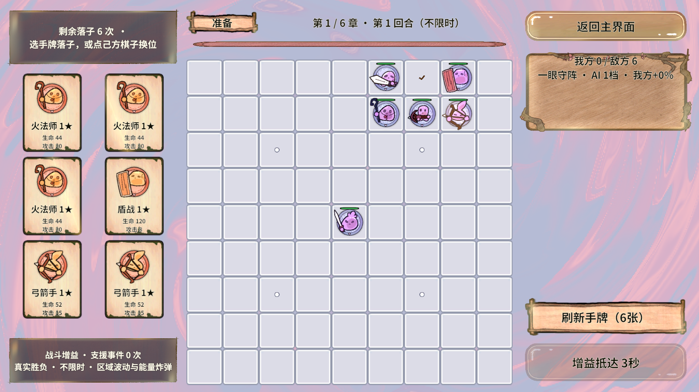
原图迁入 ChapterBackground，保留 GUID、SpriteAtlas、手调变换和 ArcaneScene 原参数；Shader 独立于大厅。
Shader：Chapter01_Tutorial_Shader.shader
材质：ArcaneScene.mat
独立参数：_ArtBlend / _ArtTwist / _ArtFlow / _ArtSpin / _ArtBreathe
每章拥有自己的图片、材质与 Shader，并装入一个完整的独立 AB。大厅不提前加载章节背景，换章按需交接，退出归还全部租约。
独立且自包含的章节 AB
直读 / 真实 PC AB 断言
背景包依赖 / 其它包反向引用
最终 C# 编译错误 / Console 错误
六个章节包均在真实 PC / Android Manifest 中验证为零依赖；其它 26 个业务包不依赖任何章节包。第一章图集与源 Sprite 同包，原 GUID 0fc7e39451e2aad43b077b83d8417359 保持不变。
| 章节 | AB 名称 | PC / MiB | Android / MiB | 依赖 / 反向引用 |
|---|---|---|---|---|
| 01 · 原始教学 | background_chapter01_tutorial | 0.778 | 0.703 | 0 / 0 |
| 02 · 魔法村落 | background_chapter02_village | 2.807 | 2.812 | 0 / 0 |
| 03 · 魔法湖泊 | background_chapter03_lake | 3.254 | 3.259 | 0 / 0 |
| 04 · 死亡沼泽 | background_chapter04_swamp | 2.532 | 2.538 | 0 / 0 |
| 05 · 冰雪极地 | background_chapter05_ice | 3.419 | 3.427 | 0 / 0 |
| 06 · 象牙金神殿 | background_chapter06_temple | 2.669 | 2.674 | 0 / 0 |
上表是磁盘压缩包大小，不是运行时内存。每个平台合计 32 包、310 条资源映射；9 张图集覆盖 214 张 Sprite 图片。第 2~6 章为 Shader 独立采样的 Default 纹理，不错误塞入 SpriteAtlas。
Chapter01_Tutorial，避免共享 Shader 把章节资源提前拉入。以下均为本轮真实 PC AB 截图。展开背景隔离渲染可查看固定 0 秒与 2.5 秒画面；画面不包含棋子动画，避免混淆效果来源。

原图迁入 ChapterBackground，保留 GUID、SpriteAtlas、手调变换和 ArcaneScene 原参数；Shader 独立于大厅。
Shader：Chapter01_Tutorial_Shader.shader
材质：ArcaneScene.mat
独立参数：_ArtBlend / _ArtTwist / _ArtFlow / _ArtSpin / _ArtBreathe
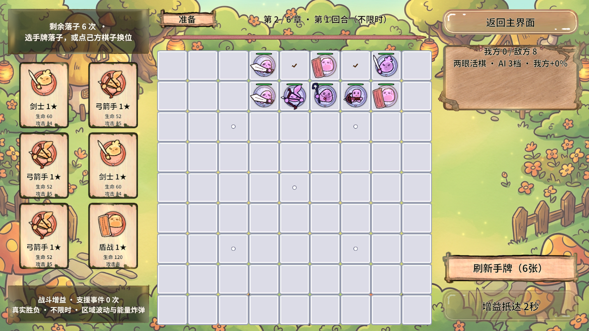
提高中间调的明朗日照，薄荷与淡紫魔法流光、暖金光束和萤火；房屋轮廓保持稳定。
Shader：Chapter02_Village_Shader.shader
材质：Chapter02_Village_Material.mat
独立参数：_Daylight / _RibbonWidth / _DreamColor
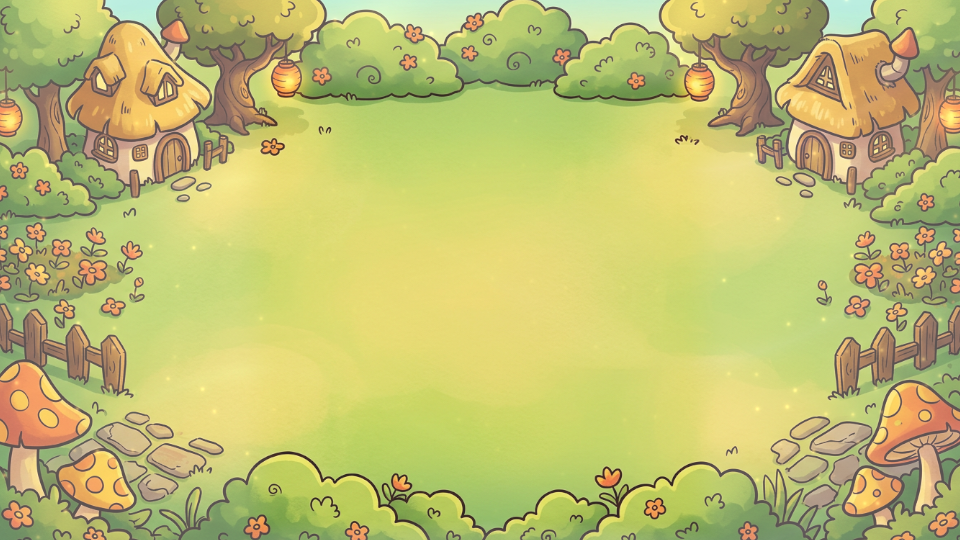
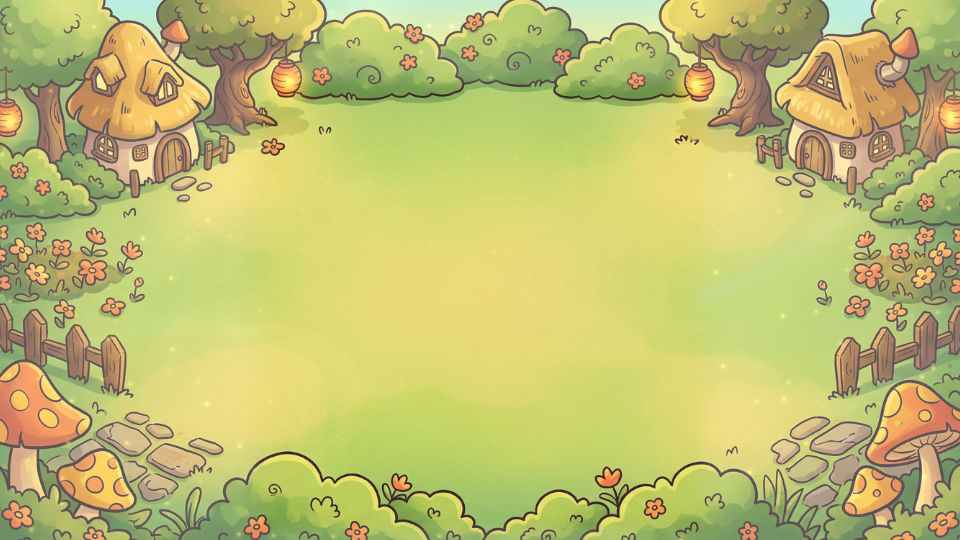
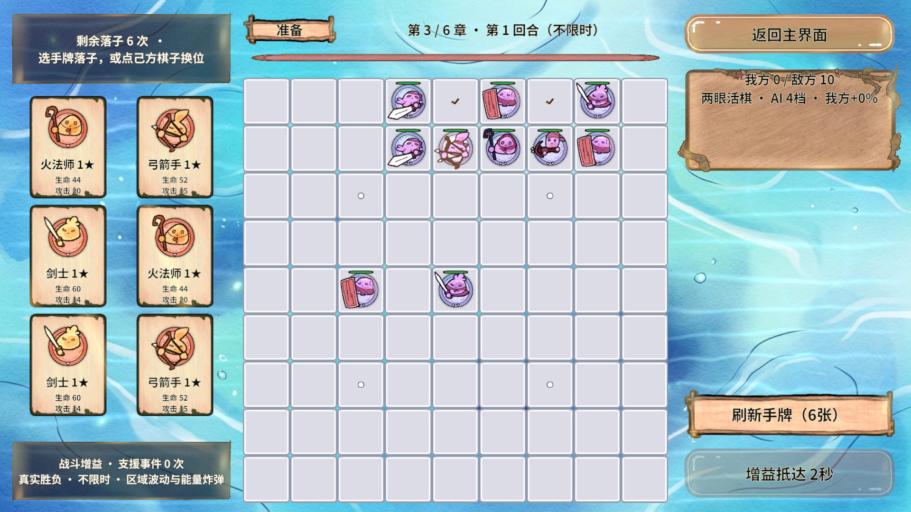
双向湖面流动、折射、原画镜像柔化反射、涟漪与细碎焦散；不增加场景反射摄像机。
Shader：Chapter03_Lake_Shader.shader
材质：Chapter03_Lake_Material.mat
独立参数：_ReflectionStrength / _ReflectionStretch / _FlowDirection / _WaterRegion
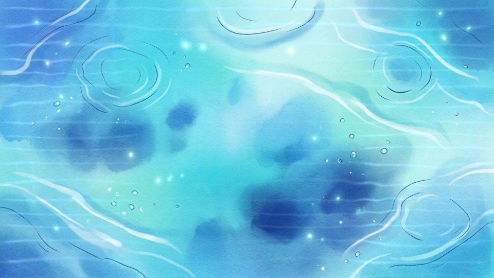
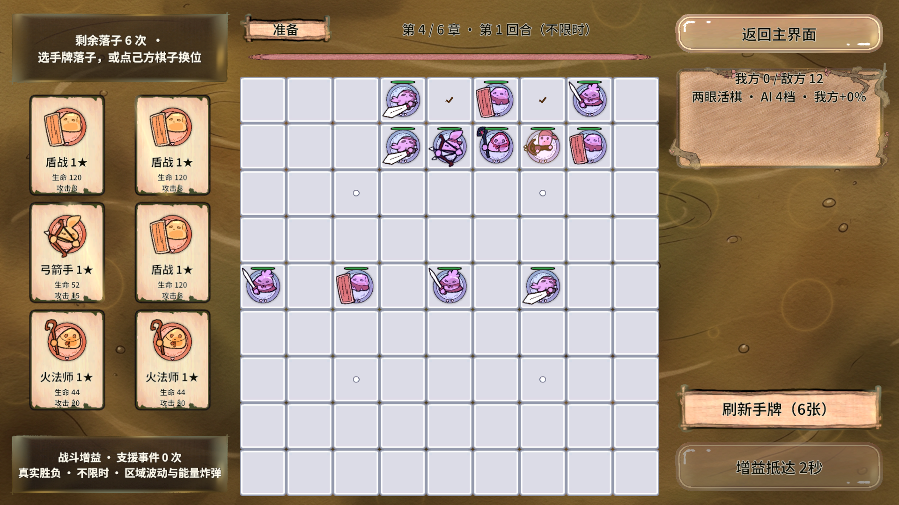
低速黏稠域扭曲、泥面褶皱、棕金油膜、逐渐鼓起并破裂的泥泡。
Shader：Chapter04_Swamp_Shader.shader
材质：Chapter04_Swamp_Material.mat
独立参数：_Viscosity / _BubbleSize / _MudDepth / _WaterRegion
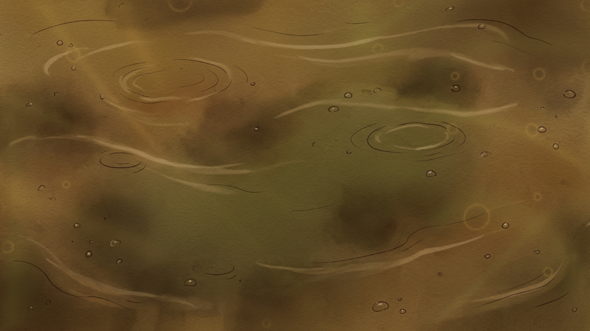
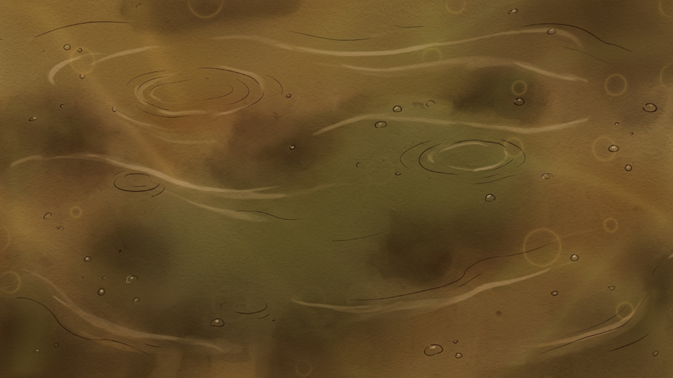
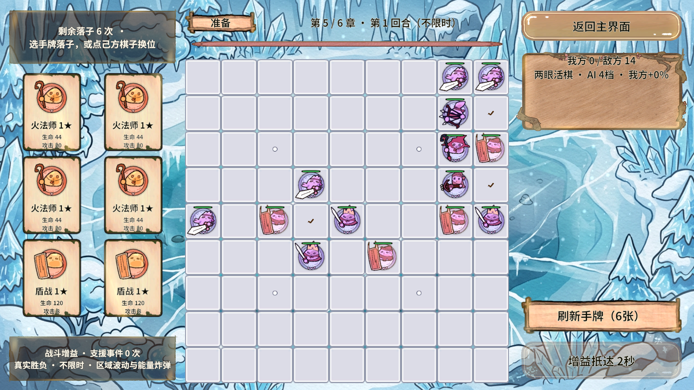
固态冰面亮纹扫光、边缘霜雾、三层风雪与清冷色调；冰面不会像水一样流动。
Shader：Chapter05_Ice_Shader.shader
材质：Chapter05_Ice_Material.mat
独立参数：_SnowWind / _Frost / _ColdTone
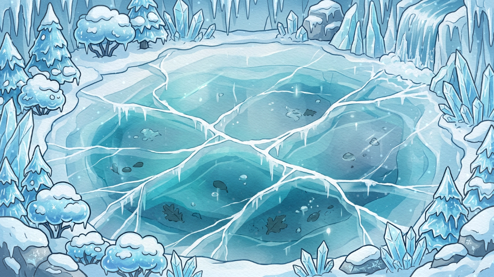
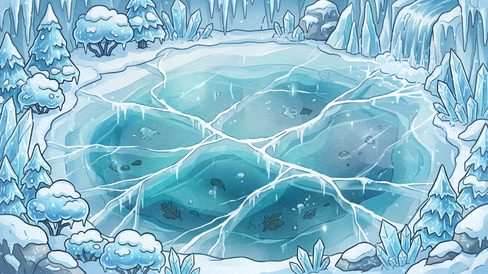
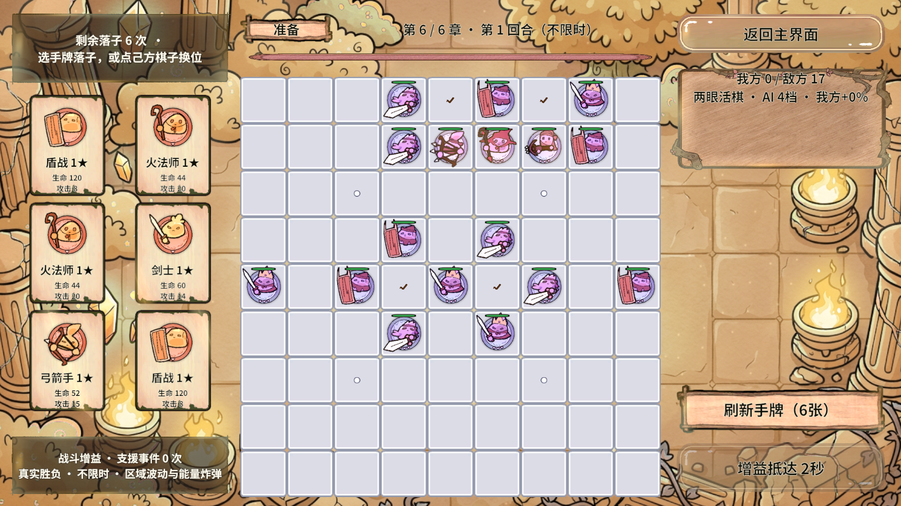
法阵中心慢旋螺纹、呼吸光环、旋转符文和金粉光束；建筑稳定、无快速闪烁。
Shader：Chapter06_Temple_Shader.shader
材质：Chapter06_Temple_Material.mat
独立参数：_Focus / _RingRadius / _SpiralTurns / _TranceStrength / _RuneColor
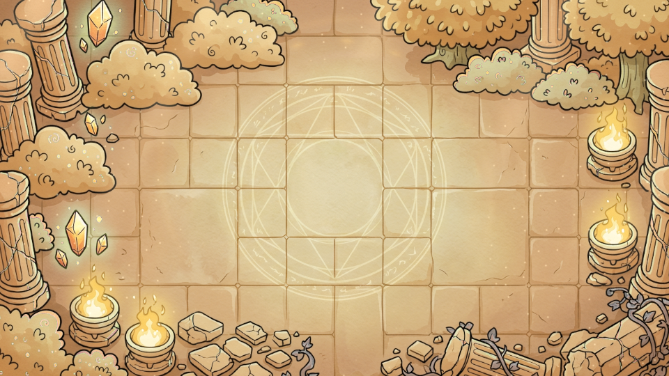
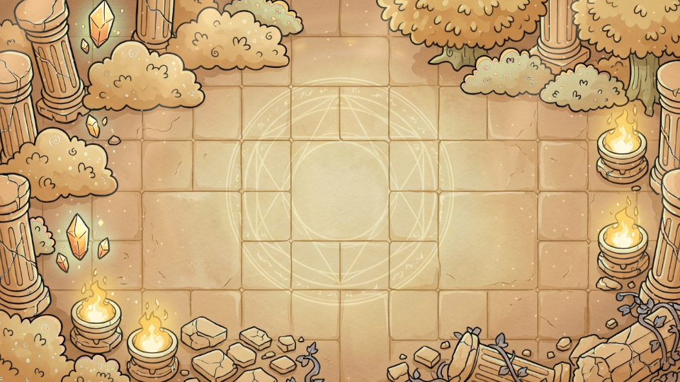
框架门面足以支持这次按章加载、异步取消与成对释放，项目侧图集适配保持唯一租约；构建门禁能发现同包重名与不闭合依赖。
Release 归零先进入未使用缓存；测试在明确的流程空闲点调用 FlushUnused 后检查实际包。不能据此声称每帧只驻留一章、进程内存瞬时清零或手机帧率已达标。
第 2~6 章通过真实 BattleService.StartRound 触发准备事件，没有改解锁存档；本轮不证明完整通章、Boss 平衡或 Android 真机画面与性能。
最初失败：同包 PNG / Shader 重名，已用文件后缀修复；原 ab.mode 在编辑态初始化触发 DontDestroyOnLoad 异常，项目测试工具改为只保存模式偏好，下一次 Play 正常初始化；构建门禁首次编译类型不匹配已修复。保留框架快照，不把这些失败隐去。
图片：Assets/GameRes/ChapterBackground/。第一章原图已迁入此处，后续替换请保持对应 .meta，不复制兼容图。
材质：Assets/GameRes/Material/Background/。第一章 ArcaneScene.mat；其余章 Chapter0X_*_Material.mat。强度、速度、粒子、颜色及上方专属参数在各自材质 Inspector 调整。
Shader：Assets/GameShader/Background/Chapter0X_*_Shader.shader。已删除旧 ChapterAtmosphere 分支 Shader；ChapterBackgroundCommon.cginc 只复用采样、顶点、噪声和棋盘保护函数，不切主题。
场景：GameScene / GamePresentation 只配各章逻辑名、专属 Shader 名称、棋盘保护和入场柔光。运行时用共享材质与 MaterialPropertyBlock，不逐帧创建材质、Sprite 或图集副本。
导入：菜单 RevGame/美术/导入章节背景与主题特效；构建：GameResourceBuild.BuildAndCopy。构建自动核对实际 Manifest，发现章节依赖或其它包拉入章节时直接失败。
自动化：game.background.import / audit / build / check / status；game.background.mode 仅编辑态保存下次 Play 模式。测试始终使用项目现有 RevMCP CLI，真实实例在线运行，未另开 Unity batch。
同目录证据包含 16 张原始 PNG、两个完整断言清单、12 份实际包 Manifest 和自动化响应。原工程证据路径：Temp/ChapterBackgroundChecks/Direct 与 AB。